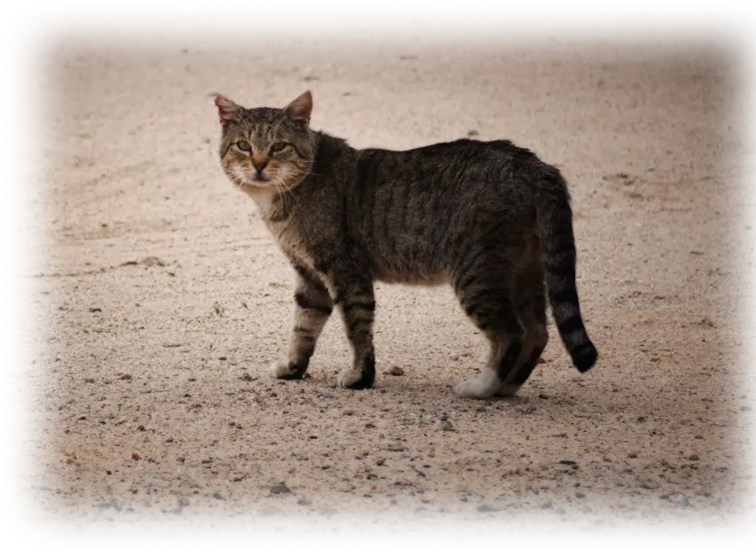

FREQUENTLY ASKED QUESTIONS
Adoption Process
Learn more about our adoption steps, requirements, and approval process.
Pet Information
Information about our adoptable animals, their backgrounds, and health status.
Application & Screening
How we review applications and ensure a good match between adopter and pet.
Fees & Support
Adoption fees, inclusions, and how your support helps us care for the animals.
Logistics & Location
Find us easily — directions, pickup options, and transport information.